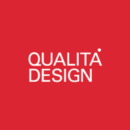

Cada identidade visual possui uma história, um universo próprio. Abaixo, uma amostra dos nossos trabalhos.
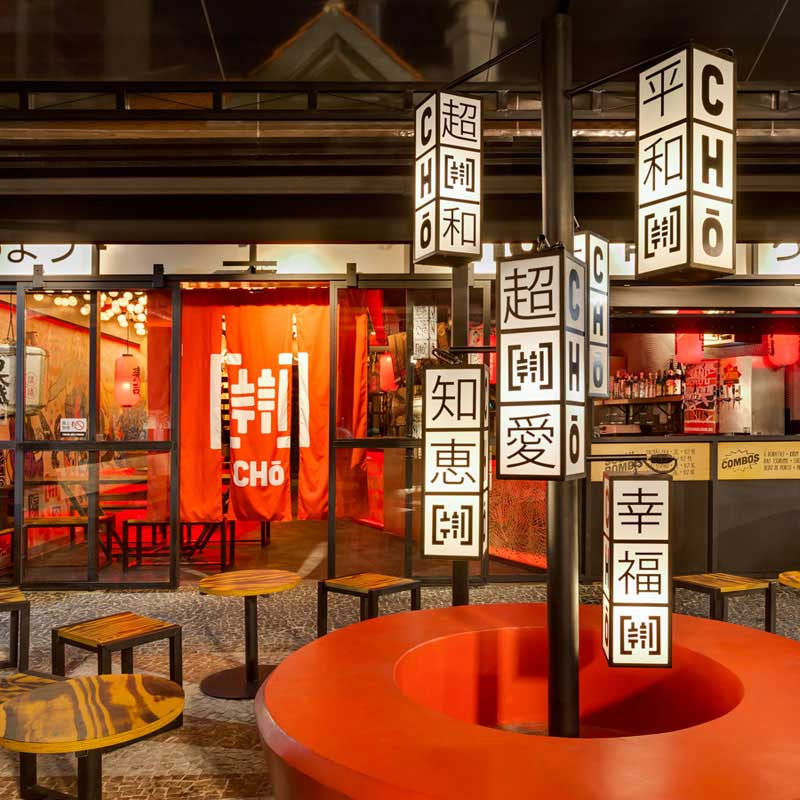
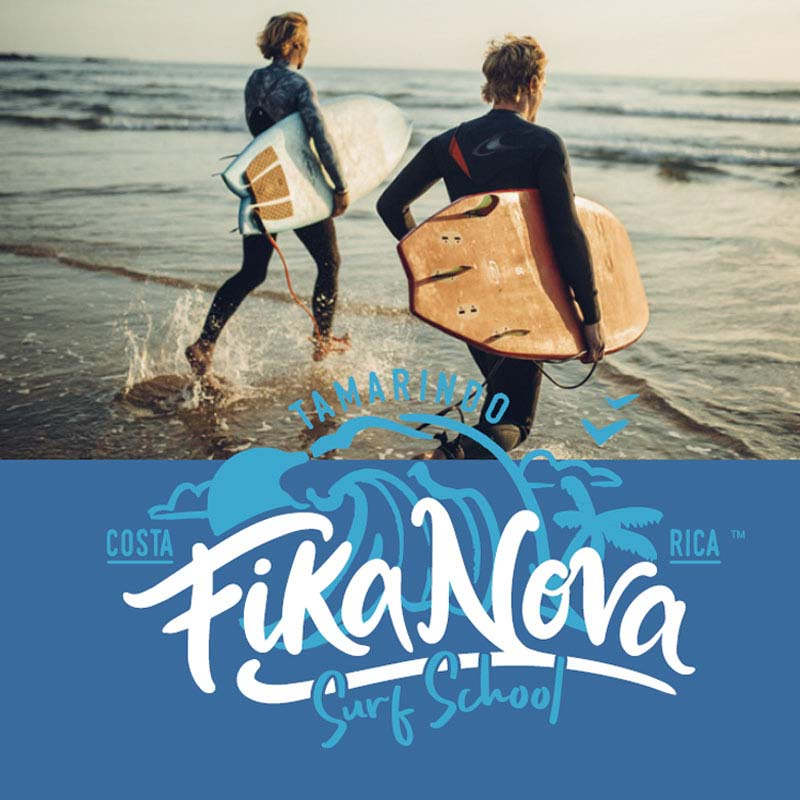
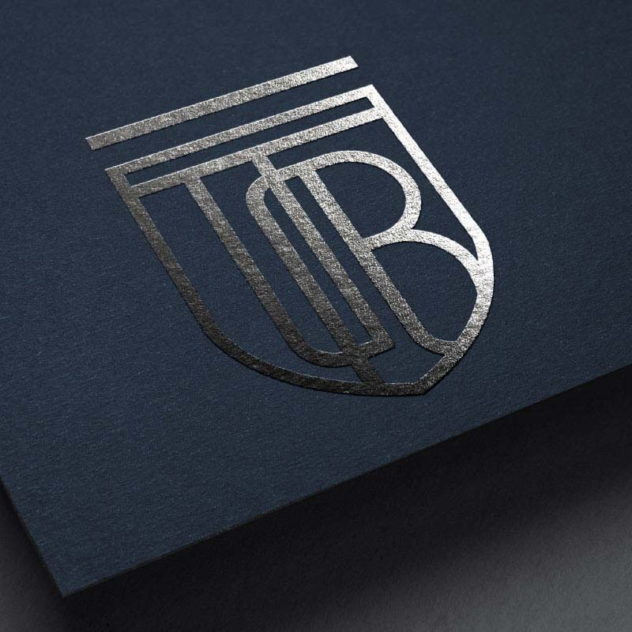
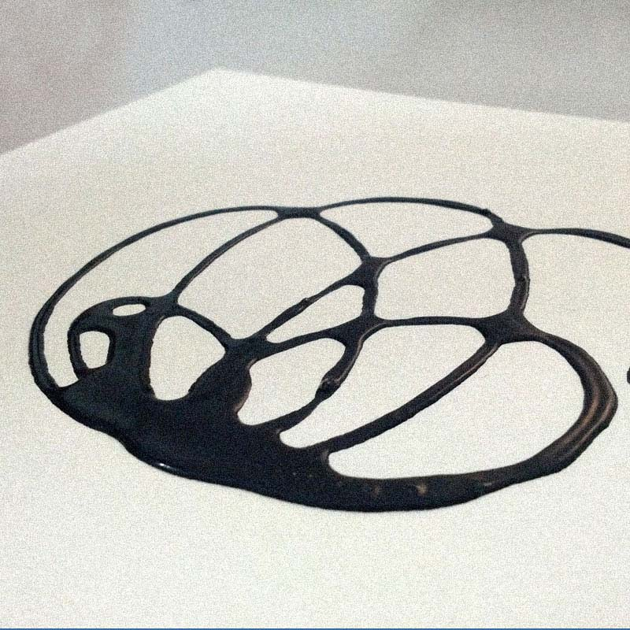
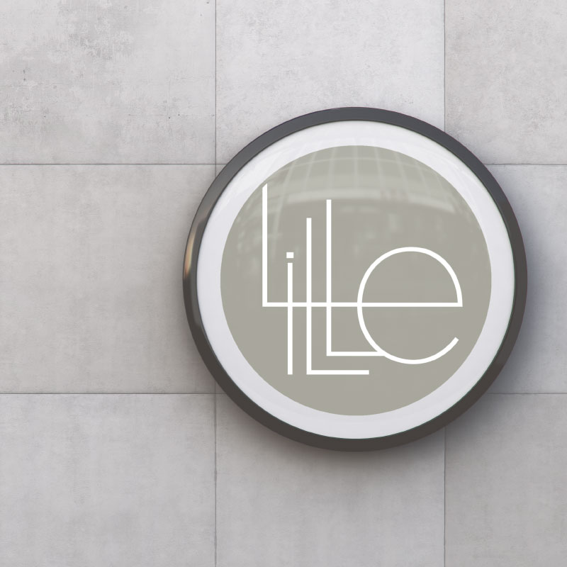
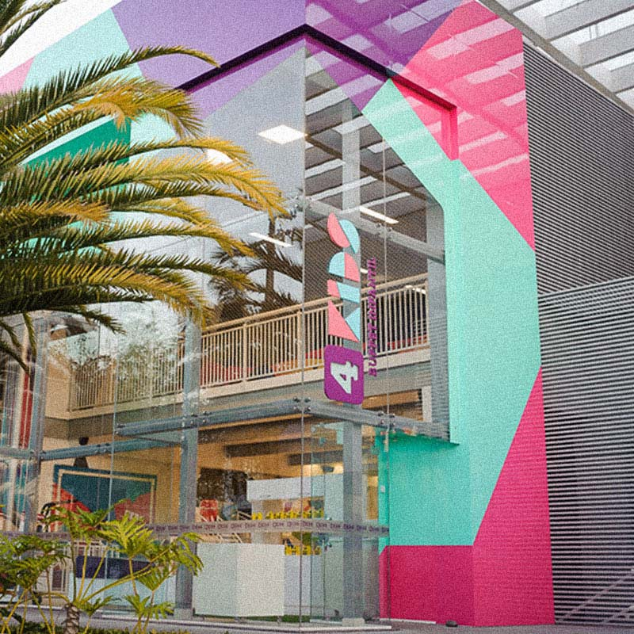
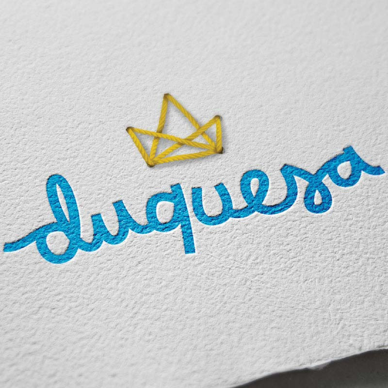
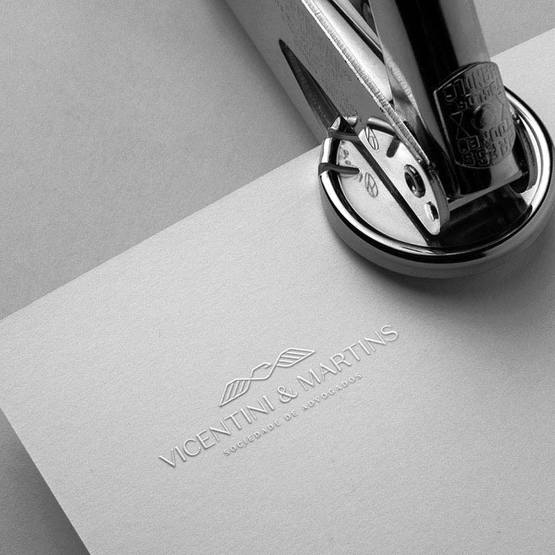
A experiência da Qualitá Design na construção de marcas vai muito além do logotipo. Com foco na identidade visual, buscamos na representação gráfica a consolidação dos valores da marca de cada empresa. Criamos conceitos.
Desenvolvemos logotipos com base numa experiência de mais de 25 anos em design gráfico, sempre em harmonia com as tendências de mercado e perfil de cada cliente.
Nossa segunda maior área de atuação é a identidade visual corporativa. Aqui entram as papelarias, a fachada e os uniformes, por exemplo. Nela estão também a paleta de cores e a tipologia de apoio.
Aqui pensamos no uso do logotipo de forma digital e como a marca irá interagir com os potenciais consumidores nas redes sociais e mídias eletrônicas: sites, instagram, whatsapp e linktree, por exemplo.

Muitos dos nossos clientes possuem uma longa história com a nossa empresa. Essa ligação, muitas vezes, vai além da identidade visual, estreitando o relacionamento empresa/cliente. Isso ocorre porque tratamos todas as marcas como se fossem nossas.
Foco em nosso objetivo, irreverência e muita criatividade foram os atributos usados pela Qualita para reformular nossa marca e nos emocionar com a apresentação do projeto!
São mais de 20 anos de trabalho juntos. A confiança que vão entregar um material que me surpreenda é total. Quando você precisa de um material que vai ser usado por muito tempo e ele tem que ser perfeito nos mínimos detalhes, a Qualitá Design dá show.
Trabalhar com a equipe da Qualitá tem sido uma experiência muito agradável! Sua dedicação e paixão pelo que fazem é exemplificada por seu incomparável suporte ao cliente e atenção às necessidades específicas de nosso negócio.
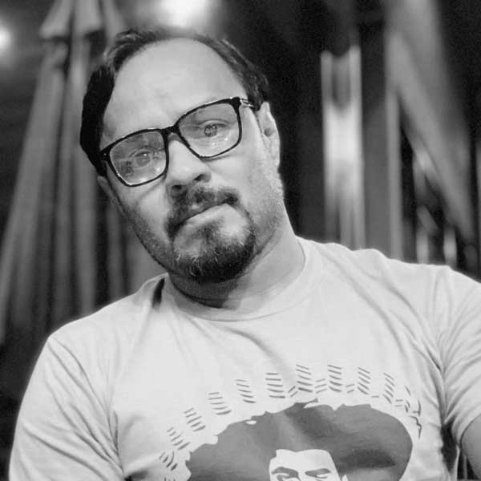
Há mais de 20 anos a Qualitá acompanha as tendências sem esquecer nosso perfil. Atendimento personalizado e atencioso. Facilitou nossa transição de marca com exímio trabalho, traduzindo o que queremos e quem nos somos.
Desde 2002, tenho a Qualita Design como grande parceira. Foram diversos projetos e empreendimentos realizados. Além da competência e transparência foram sempre muito assertivos e atualizados no mercado, apresentando as soluções ideais para as nossas demandas.
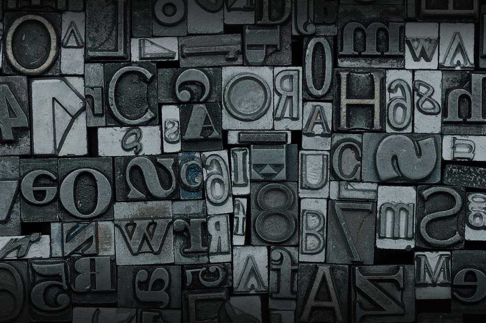
Existem algumas marcas ao redor do mundo com mais de 1000 anos de existência e marcas fazem parte da história da humanidade há mais de 3500 anos.
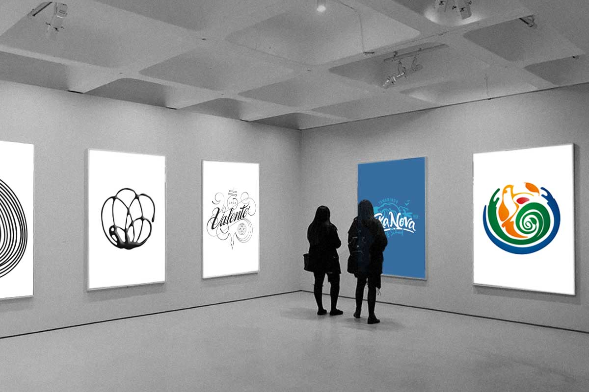
Aqui você vai encontrar muitos logotipos que fizeram parte da vida de Curitiba. Um passeio por marcas de bares, restaurantes, escritórios de advocacia e clínicas, entre tantas outras. Ainda estamos buscando em nossos arquivos por criações que merecem estar aqui. EXPLORE. ➽